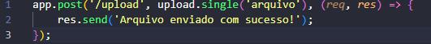

Multer é um middleware para Node.js usado para lidar com upload de arquivos. Ele é escrito sobre a biblioteca busboy e facilita o processo de receber arquivos enviados por meio de formulários do tipo multipart/form-data.
npm install multerUsando o middleware em uma rota:
Para enviar múltiplos arquivos, use:
Lembre-se de criar a pasta uploads ou garantir que ela exista no seu projeto.